CV
PostDoc: The Rockefeller University (New York City, USA)
Doc: Max Planck Institute (Potsdam, Germany)
PreDoc: University Stuttgart (Germany)
Loading...
We study life with an intelectual style inspired by theoretical physics
Our Research
News
PhD position in theoretical Biophysics:
We are looking for a motivated PhD student with a solid background in physics, an interest in engaging with biologists and thinking together about experimental data and the connection to theoretical models. In this project, we will study how the response to perturbations in self-organized systems can elucidate underlying mechanisms. If you're excited about working in a highly stimulating team at the interface of theoretical physics and biology, collaborating with experimentalists, and solving problems with stochastic physics and complexity science, contact me for an informal chat!
Florian Berger: f.m.berger@uu.nl
We are looking for a motivated PhD student with a solid background in physics, an interest in engaging with biologists and thinking together about experimental data and the connection to theoretical models. In this project, we will study how the response to perturbations in self-organized systems can elucidate underlying mechanisms. If you're excited about working in a highly stimulating team at the interface of theoretical physics and biology, collaborating with experimentalists, and solving problems with stochastic physics and complexity science, contact me for an informal chat!
Florian Berger: f.m.berger@uu.nl
Our Research
Living cells display various active processes that generate the cell's internal structure, carry out different functions, and precisely process information. We seek physical descriptions of these active processes that reveal general principles of their operation. With an intellectual style inspired by theoretical physics, we primarily focus on two systems: molecular motors with their dynamic cytoskeleton and hair cells of the inner ear responsible for the sensation of sound. We are on a mission to characterize the physical constraints and quantitatively rationalize the richness of operation and organization of living systems.
Molecular Motors & The Cytoskeleton
The cytoskeleton, a dynamic scaffold within cells, not only provides mechanical stability but also serves as a network of tracks for motor proteins to transport cargo. The dynamic interplay between the cytoskeleton and cargo transport is a fascinating area of study, as these systems self-organize to meet specific cellular requirements. We investigate how molecular mechanisms orchestrate this dynamic organization and function on a larger scale, and how these mechanisms are connected to the emergent system's physical properties.
Physics of Hearing
Our remarkable sense of hearing relies on an active process in the ear, which is powered by the nonlinear oscillations of a hair cell's mechanosensitive hair bundle. These systems display a behavior close to a Hopf bifurcation, and their energetics can be quantified using methods from Stochastic Thermodynamics. By connecting mathematical descriptions to experimental data, we systematically investigate their dynamics and contribute to a physical understanding of the active process in the inner ear.
Our Methods
We use math
To describe the rich phenomena of living systems and build consistent descriptions that help us rationalize their fascinating behavior, we rely on stochastic and physical descriptions formulated in the language of mathematics.
Computer Simulations
It is challenging to reduce the complexity of cellular systems to a low-dimensional representation. Therefore, we use computer simulations on a coarse-grained level to study the consequences of our descriptions.
Machine Learning
We believe machines can learn and recognize patterns in biologically "messy" data. Therefore, we started to investigate these new tools to bridge our theory to data provided by our experimental colleagues.
Experiments
Theory is beautiful, but when it matches experimental data or even predicts experimental outcomes quantitatively, it gives an indescribable satisfaction. Therefore, we aim to connect our findings to experiments.
Our Recent Publications
-
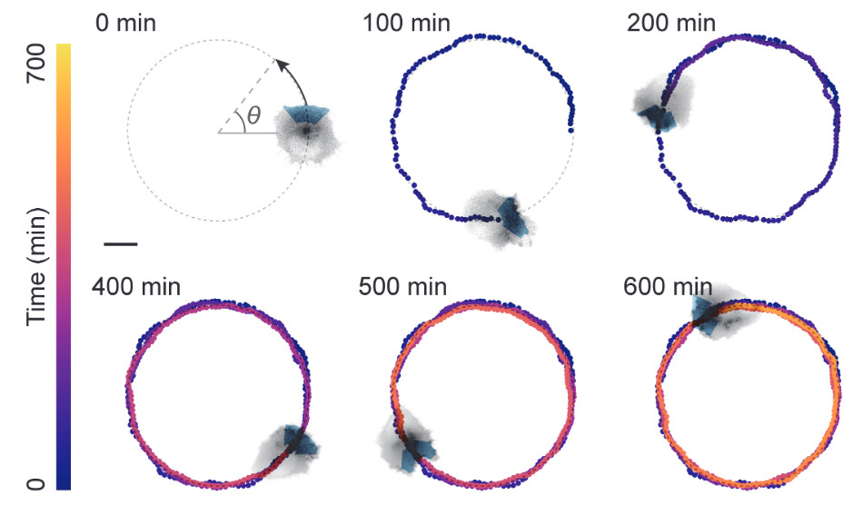
Outcome-Driven Microscopy: Closed-Loop Optogenetic Control of Cell Biology
bioRxiv -
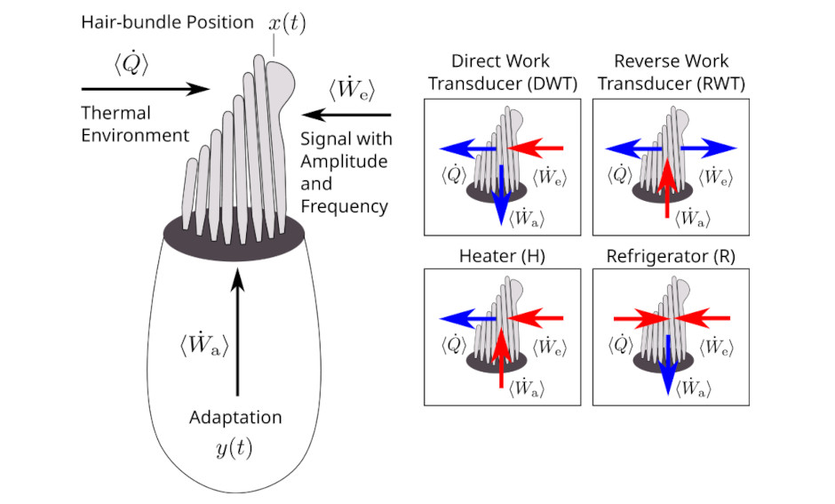
Active energy harvesting and work transduction by hair-cell bundles in bullfrog’s inner ear
arXiv -
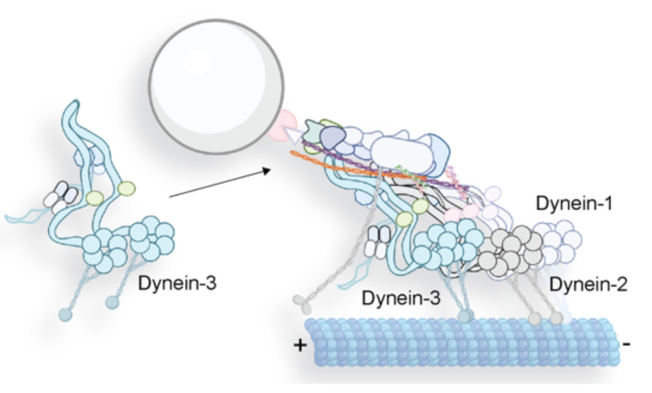
The Power of Three: Dynactin associates with three dyneins under load for greater force production
bioRxiv -
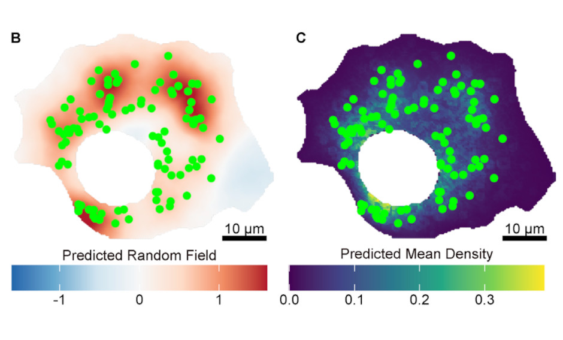
Behind the scenes of cellular organization: Quantifying spatial phenotypes of puncta structures with statistical models including random fields
MBoC -
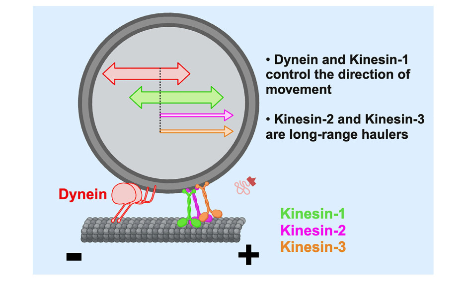
Optogenetic control of kinesin-1, -2, -3 and dynein reveals their specific roles in vesicular transport
Cell Reports -
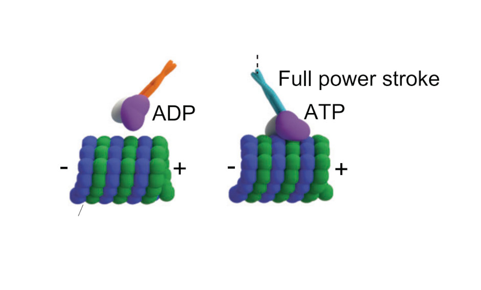
Kinesin-14 HSET and KlpA are non-processive microtubule motors with load-dependent power strokes
Nature Communications -
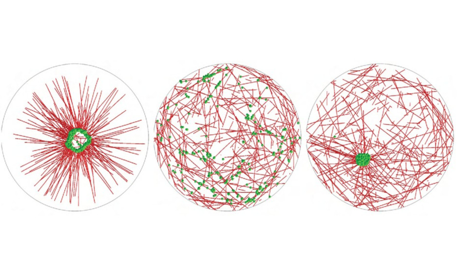
Self-assembly of pericentriolar material in interphase cells lacking centrioles
eLife -
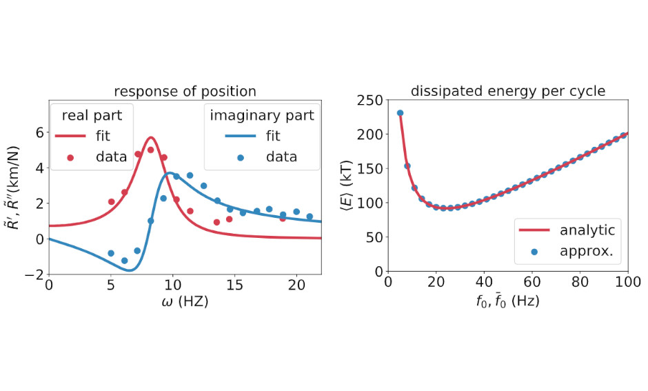
Violation of the fluctuation-response relation from a linear model of hair bundle oscillations
bioRxiv -
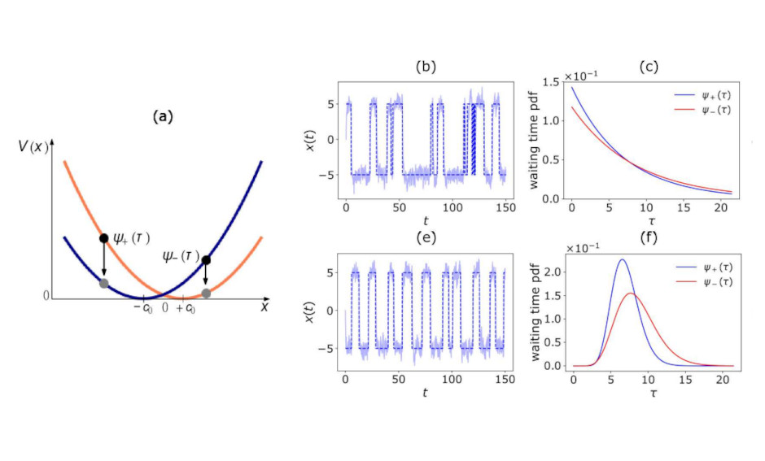
Modeling Active Non-Markovian Oscillations
Physical Review Letters -
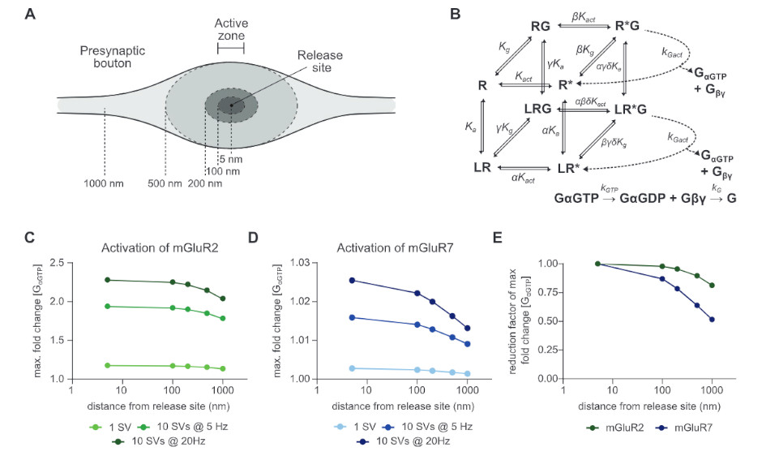
Subsynaptic mobility of presynaptic mGluR types is differentially regulated by intra- and extracellular interactions
MBoC -
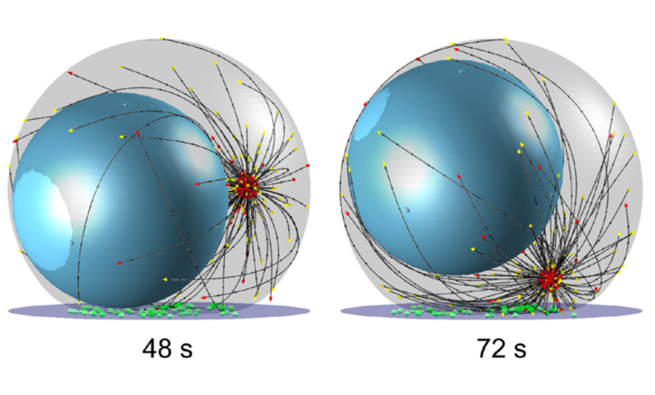
Dynein self-organizes while translocating the centrosome in T-cells
MBoC -
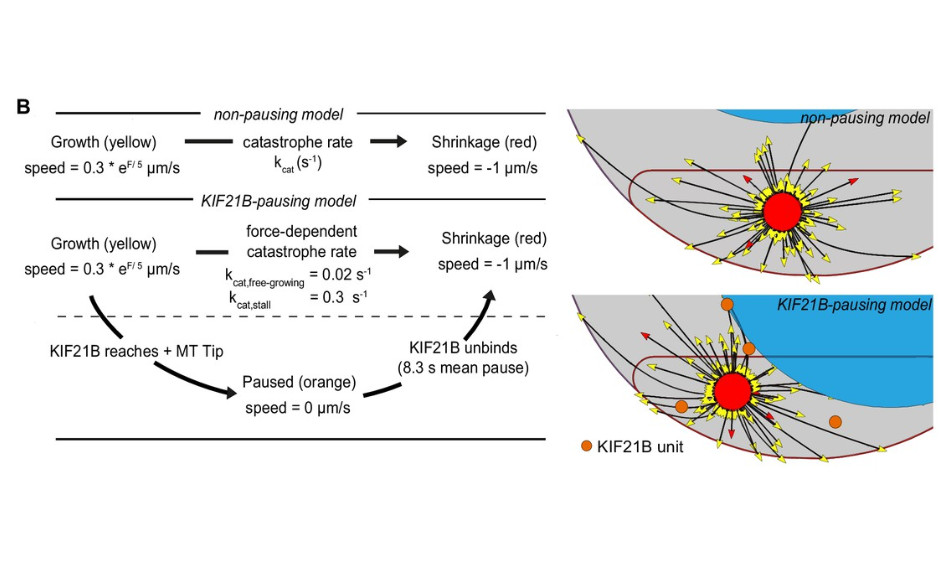
Kinesin-4 KIF21B limits microtubule growth to allow rapid centrosome polarization in T cells
eLife
Our Team
"Scientific progress is driven by creativity and curiosity, which is enriched by diverse perspectives. Therefore, we are committed to creating a safe space in which everyone is an equally valued member, respected for what makes them "them" and can strive to their fullest potential."
Dr. Florian Berger
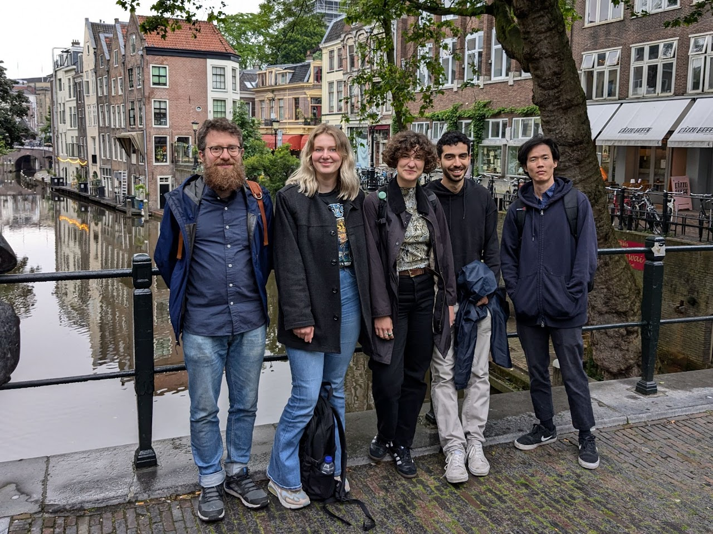Group 2024
Group Members
Yanathip Thipmaungprom (PhD candidate, UU)
Kyriacos Nicolaou (PhD candidate, UU)
Rimo Sarkar (MSc Student, Physics, UU)
Konstantina Forti (MSc Student, MCLS, UU)
Anna Delhaas (MSc Student, Bioinformatics and Biocomplexity, UU)
Friso Grace (Summer intern, University of St Andrews)
Myrthe Versteijnen (MSc Student, Bioinformatics and Biocomplexity, UU)
Diana Jiang (MSc Student, Neuroscience and Cognition, UU)
Oscar Klock (MSc Student, Neuroscience and Cognition, UU)
Nian Vervoort (MSc Student, MCLS, UU)
Jakob Schröder (MSc Student, Physics, UU)
Petrit Sadiku (MSc Student, MCLS, UU)
Christopher Eseroglou (MSc Student, Physics, UU)
Nemo Andrea (MSc Student, Casimir, TU Delft)
Oane J. Gros (MSc Student, MCLS, UU)
Michel Hamakers (MSc Student, Biology, WUR)